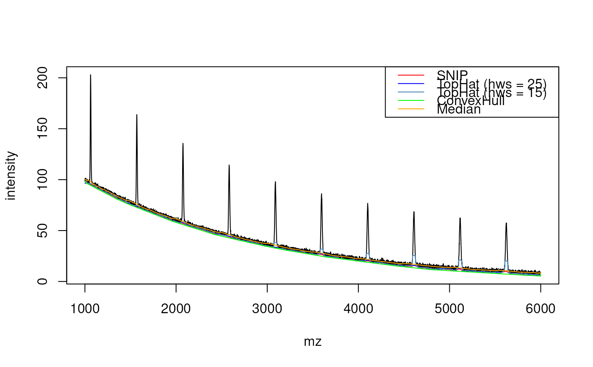

This function estimates the the baseline of mass spectrometry data, represented by numeric vectors of masses and intensities of identical lengths.
Usage
estimateBaseline(
x,
y,
method = c("SNIP", "TopHat", "ConvexHull", "median"),
...
)
estimateBaselineConvexHull(x, y)
estimateBaselineMedian(x, y, halfWindowSize = 100L)
estimateBaselineSnip(x, y, iterations = 100L, decreasing = TRUE)
estimateBaselineTopHat(x, y, halfWindowSize = 100L)Arguments
- x
numeric()vector of masses.- y
numeric()vector of intensities.- method
character(1)specifying the estimation method. One of"SNIP"(default),"TopHat","ConvexHull"or"median". See details below.- ...
Additional parameters passed to the respective functions.
- halfWindowSize
integer()defining the half window size. Default is 100L. The resulting window reaches fromx[cur_index - halfWindowSize]tox[cur_index + halfWindowSize].- iterations
integer()controling the window size (k, similar tohalfWindowSizein"TopHat","median") of the algorithm. The resulting window reaches fromx[cur_index - iterations]tox[cur_index + iterations].- decreasing
logical(1)whether the cliping window should be decreasing, as defined in Morhac (2009). A decreasing clipping window is suggested to get a smoother baseline. ForTRUE(FALSE) k=iterationsis decreased (increased) by one until zero (iterations) is reached. The default setting isdecreasing = TRUE.
Value
numeric() with estimated baseline intensities.
Details
SNIP: This baseline estimation is based on the Statistics-sensitive Non-linear Iterative Peak-clipping algorithm (SNIP) described in Ryan et al 1988.
The algorithm based on the following equation: $$y_i(k) = \min \{ y_i, \frac{(y_{i-k}+y_{i+k})}{2} \}$$
It has two additional arguments namely an integer
iterationsand a logicaldecreasing.TopHat: This algorithm applies a moving minimum (erosion filter) and subsequently a moving maximum (dilation filter) filter on the intensity values. The implementation is based on van Herk (1996). It has an additional
halfWindowSizeargument determining the half size of the moving window for the TopHat filter.ConvexHull: The baseline estimation is based on a convex hull constructed below the spectrum.
Median: This baseline estimation uses a moving median. It is based on
stats::runmed(). The additional argumenthalfWindowSizecorresponds to thekargument instats::runmed()(k = 2 * halfWindowSize + 1) and controls the half size of the moving window.
References
These functions have been ported from the MALDIqaunt package.
SNIP:
C.G. Ryan, E. Clayton, W.L. Griffin, S.H. Sie, and D.R. Cousens (1988). Snip, a statistics-sensitive background treatment for the quantitative analysis of pixe spectra in geoscience applications. Nuclear Instruments and Methods in Physics Research Section B: Beam Interactions with Materials and Atoms, 34(3): 396-402.
M. Morhac (2009). An algorithm for determination of peak regions and baseline elimination in spectroscopic data. Nuclear Instruments and Methods in Physics Research Section A: Accelerators, Spectrometers, Detectors and Associated Equipment, 600(2), 478-487.
TopHat:
M. van Herk (1992). A Fast Algorithm for Local Minimum and Maximum Filters on Rectangular and Octagonal Kernels. Pattern Recognition Letters 13.7: 517-521.
J. Y. Gil and M. Werman (1996). Computing 2-Dimensional Min, Median and Max Filters. IEEE Transactions: 504-507.
ConvexHull:
Andrew, A. M. (1979). Another efficient algorithm for convex hulls in two dimensions. Information Processing Letters, 9(5), 216-219.
Examples
## ----------------------------
## Simulation example data
nmz <- 5000
mz <- seq(1000, length.out = nmz)
## create peaks
center <- seq(50, nmz, by = 500)
peaks <- lapply(center, function(cc)1000 * dpois(0:100, (1000 + cc) / 75))
## create baseline
intensity <- 100 * exp(-seq_len(nmz)/2000)
## add peaks to baseline
for (i in seq(along = center)) {
intensity[center[i]:(center[i] + 100)] <-
intensity[center[i]:(center[i] + 100)] + peaks[[i]]
}
## add noise
intensity <- intensity + rnorm(nmz, mean = 0, sd = 1)
plot(mz, intensity, type = "l")
## ----------------------------
## SNIP baseline
base_SNIP <- estimateBaseline(mz, intensity,
method = "SNIP",
iterations = 20L)
## same as estimateBaselineSnip(mz, intensity, iterations = 20L)
lines(mz, base_SNIP, col = "red")
## ----------------------------
## TopHat baseline
base_TH25 <- estimateBaseline(mz, intensity,
method = "TopHat",
halfWindowSize = 25L)
## same as estimateBaselineTopHat(mz, intenstity, halfWindowSize = 25L)
lines(mz, base_TH25, col = "blue")
base_TH15 <- estimateBaseline(mz, intensity,
method = "TopHat",
halfWindowSize = 15L)
lines(mz, base_TH15, col = "steelblue")
## ----------------------------
## Convex hull baseline
base_CH <- estimateBaseline(mz, intensity,
method = "ConvexHull")
## same as estimateBaselineConvexHull(mz, intensity)
lines(mz, base_CH, col = "green")
## ----------------------------
## Median baseline
base_med <- estimateBaseline(mz, intensity,
method = "median")
## same as estimateBaselineMedian(mz, intensity)
lines(mz, base_med, col = "orange")
legend("topright", lwd = 1,
legend = c("SNIP", "TopHat (hws = 25)",
"TopHat (hws = 15)",
"ConvexHull", "Median"),
col = c("red", "blue", "steelblue",
"green", "orange"))
